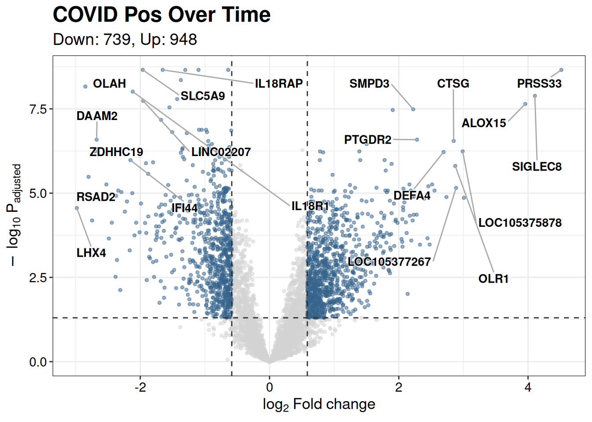
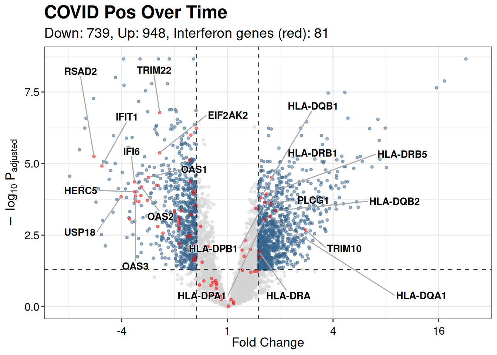
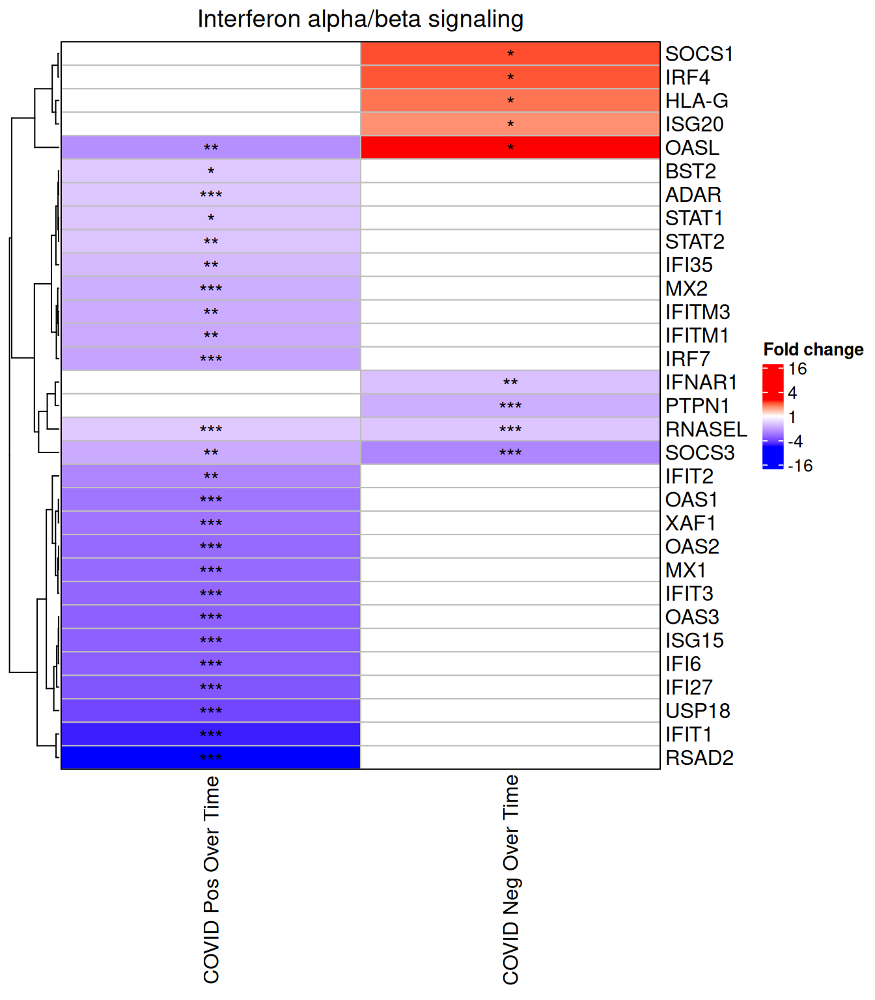
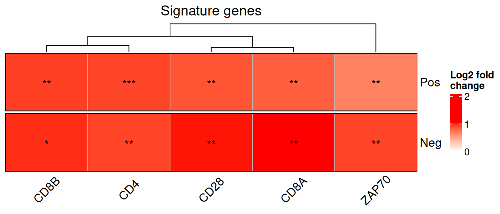
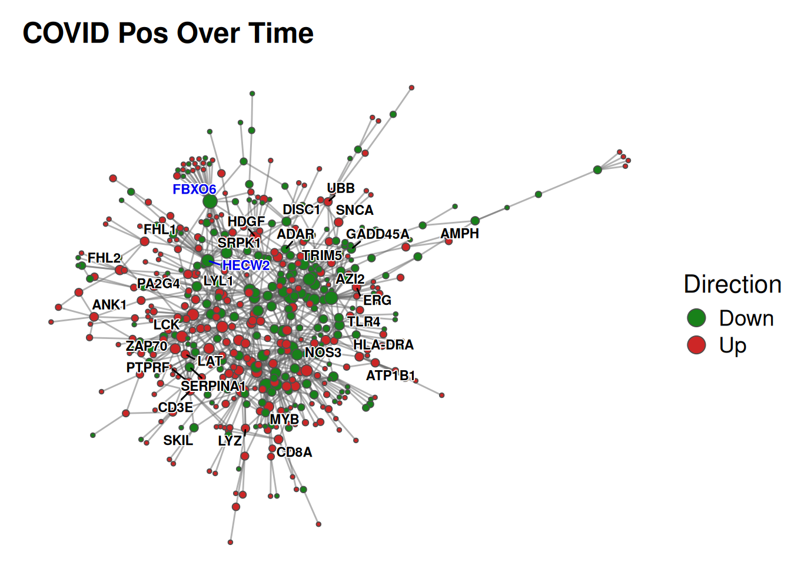
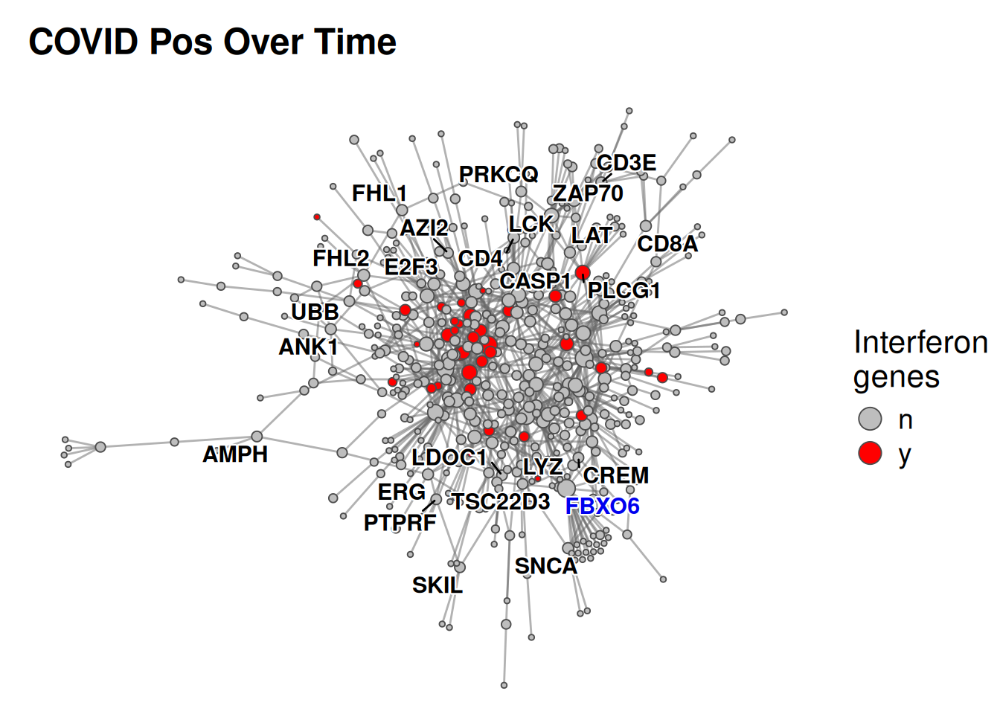
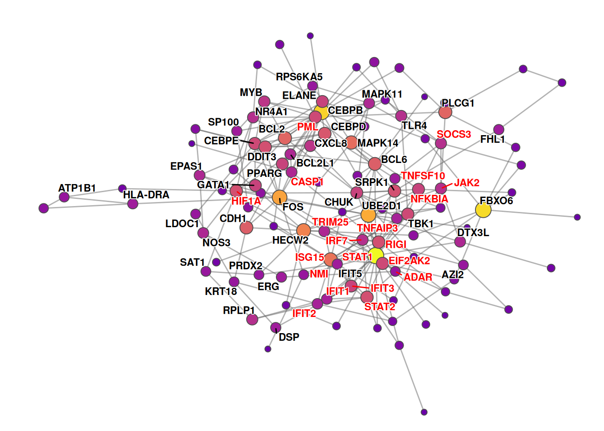
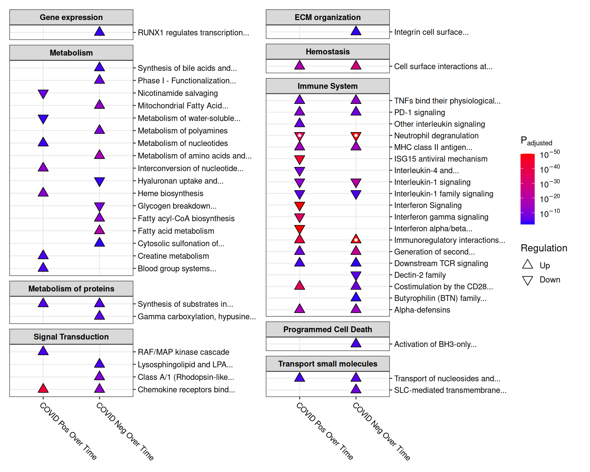
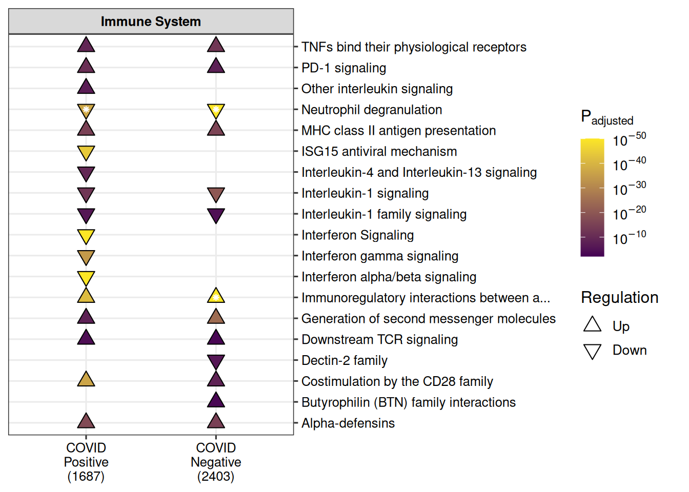
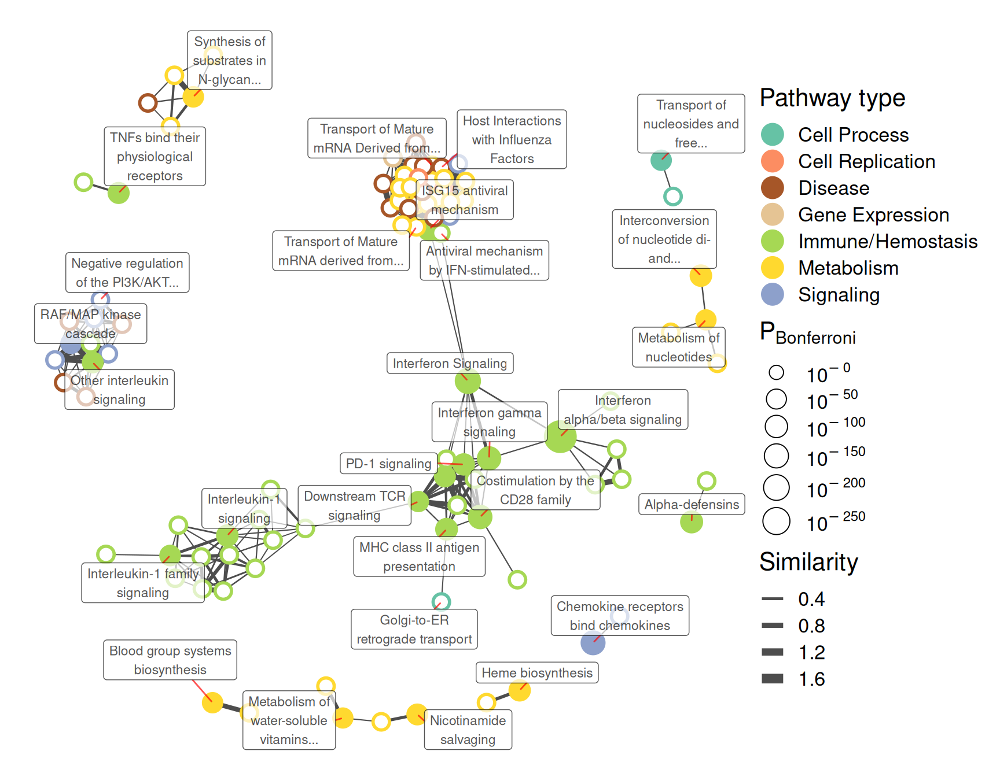

# We'll also be using some functions from dplyr
# BiocManager::install("pathlinkR")
library(dplyr)
library(pathlinkR)Analyze and visualize RNA-Seq data with pathlinkR
1 Introduction
Often times, gene expression studies such as microarrays and RNA-Seq result in hundreds to thousands of differentially expressed genes (DEGs). It becomes very difficult to understand the biological significance of such massive data sets, especially when there are multiple conditions and comparisons being analyzed. This package facilitates visualization and downstream analyses of differential gene expression results, using pathway enrichment and protein-protein interaction networks, to aid researchers in uncovering underlying biology and pathophysiology from their gene expression studies.
We have included an example data set of gene expression results in this package as the object exampleDESeqResults. This is a list of 2 data frames, generated using the results() functions from the package DESeq2 (Love et al. 2014). The data is from an RNA-Seq study investigating COVID-19 and non-COVID-19 sepsis patients at admission (T1) compared to approximately1 week later (T2) in the ICU, indexed over time (i.e., T2 vs T1) (An et al. 2023).
2 Installation
To install and load the package:
3 Visualizing RNA-Seq data with volcano plots
One of the first visualizations commonly performed with gene expression studies is to identify the number of DEGs. These are typically defined using specific cutoffs for both fold change and statistical significance. Thresholds of adjusted p-value <0.05 and absolute fold change >1.5 are used as the default, though any value can be specified. pathlinkR includes the function eruption() to create a volcano plot.
## A quick look at the DESeq2 results table
data("exampleDESeqResults")
exampleDESeqResults[[1]]
DataFrame with 5000 rows and 6 columns
baseMean log2FoldChange lfcSE stat pvalue
<numeric> <numeric> <numeric> <numeric> <numeric>
ENSG00000000938 16292.6481 -0.562495 0.145827 -3.85727 1.14662e-04
ENSG00000002586 1719.5175 0.450118 0.152012 2.96107 3.06577e-03
ENSG00000002919 870.6417 -0.244573 0.124929 -1.95769 5.02664e-02
ENSG00000002933 266.6548 0.883831 0.209363 4.22153 2.42652e-05
ENSG00000003249 11.4328 1.328713 0.288138 4.61137 4.00026e-06
... ... ... ... ... ...
ENSG00000284882 121.6850 -0.5997942 0.204597 -2.9315844 3.37238e-03
ENSG00000284948 38.7903 -0.1786622 0.179800 -0.9936710 3.20383e-01
ENSG00000284977 73.4571 -0.7469480 0.182492 -4.0930511 4.25734e-05
ENSG00000285417 25.7393 -0.0180603 0.304676 -0.0592769 9.52732e-01
ENSG00000285444 17.3871 -0.3702265 0.264241 -1.4010952 1.61186e-01
padj
<numeric>
ENSG00000000938 0.001353100
ENSG00000002586 0.015382030
ENSG00000002919 0.123684426
ENSG00000002933 0.000431269
ENSG00000003249 0.000119958
... ...
ENSG00000284882 0.016523420
ENSG00000284948 0.465445666
ENSG00000284977 0.000659367
ENSG00000285417 0.970172528
ENSG00000285444 0.286419134## Generate a volcano plot from the first data frame, with default thresholds
eruption(
rnaseqResult=exampleDESeqResults[[1]],
title=names(exampleDESeqResults[1])
)
There are multiple options available for customizing this volcano plot, including:
- Adjust the cutoffs for adjusted p-value and fold change
- Switch the colours of significant and non-significant genes
- Change the number of labelled genes
- Adjust the x- and y-axis limits
- Plot either log2 or non-log2 fold change (for a better sense of magnitude)
- Highlight specific gene sets of interest
Since we’re looking at COVID-19 in this example data set, let’s highlight genes in the interferon signaling pathway. We’ll use a database of Reactome pathways used by the pathway enrichment package Sigora to find the genes involved in interferon signaling. More information on Reactome pathways and the Sigora package can be found in the pathway enrichment section below.
Let’s make the following adjustment to the standard volcano plot:
- Highlight the interferon genes and provide a brief description
- Converts the x-axis from log2 fold change to non-log2 fold change
- Label only the top 10 up- and down-regulated genes which belong to the interferon pathway
data("sigoraDatabase")
interferonGenes <- sigoraDatabase %>%
filter(pathwayName == "Interferon Signaling") %>%
pull(ensemblGeneId)
eruption(
rnaseqResult=exampleDESeqResults[[1]],
title=names(exampleDESeqResults[1]),
highlightGenes=interferonGenes,
highlightName="Interferon genes (red)",
label="highlight",
nonlog2=TRUE,
n=10
)
4 Visualizing fold changes across comparisons
In addition to creating volcano plots, we can also visualize our DEGs using heatmaps of genes involved in a specific pathways (e.g. one identified as significant by pathwayEnrichment()). The function plotFoldChange() accomplishes this by taking in an input list of DESeq2::results() data frames, just like pathwayEnrichment(), and creating a heatmap of fold changes for the constituent genes.
plotFoldChange(
exampleDESeqResults,
pathName="Interferon alpha/beta signaling"
)
Another example, with more customization:
- Shorten the names of each comparison
- Provide a custom list of genes to visualize, and add an informative title
- Use log2 fold changes in the heatmap cells
- Swap the rows and columns from the default, and add a split between the rows (comparisons)
exampleDESeqResultsRenamed <- setNames(
exampleDESeqResults,
c("Pos", "Neg")
)
plotFoldChange(
exampleDESeqResultsRenamed,
manualTitle="Signature genes",
genesToPlot=c("CD4", "CD8A","CD8B", "CD28", "ZAP70"),
geneFormat="hgnc",
colSplit=c("Pos", "Neg"),
log2FoldChange=TRUE,
colAngle=45,
clusterRows=FALSE,
clusterColumns=TRUE,
invert=TRUE
)
5 Building and visualizing PPI networks
pathlinkR includes tools for constructing and visualizing Protein-Protein Interaction (PPI) networks. Here we leverage PPI data gathered from InnateDB to generate a list of interactions among DE genes identified in gene expression analyses. These interactions can then be used to build PPI networks within R, with multiple options for controlling the type of network, such as support for first, minimum, or zero order networks. The two main functions used to accomplish this are ppiBuildNetwork and ppiPlotNetwork.
Let’s continue looking at the DEGs from the COVID positive patients over time, using the significant DEGs to build a PPI network. Since the data frame we’re inputting includes all measured genes (not just the significant ones), we’ll use the filterInput=TRUE option to ensure the network is made only with those genes which pass the standard thresholds (defined above). Since we’re visualizing a network of DEGs, let’s colour the nodes to indicate the direction of their dysregulation (i.e. up- or down-regulated) by specifying fillType="foldChange".
exNetwork <- ppiBuildNetwork(
rnaseqResult=exampleDESeqResults[[1]],
filterInput=TRUE,
order="zero"
)
ppiPlotNetwork(
network=exNetwork,
title=names(exampleDESeqResults)[1],
fillColumn=LogFoldChange,
fillType="foldChange",
nodeSize=c(1, 4),
label=TRUE,
labelColumn=hgncSymbol,
labelSize=3,
legend=TRUE
)
The nodes with blue labels (e.g. STAT1, FBXO6, CDH1, etc.) are hubs within the network; i.e. those genes which have a high betweenness score. The statistic used to determine hub nodes can be set in ppiBuildNetwork() with the “hubMeasure” option.
Let’s make some tweaks to this standard network. The output of ppiBuildNetwork() is a tidygraph object, meaning we can use the suite of dplyr verbs to make changes. So let’s add a column to denote if a DEG is from the interferon pathway (defined above) and highlight only those genes.
exNetworkInterferon <- mutate(
exNetwork,
isInterferon = if_else(name %in% interferonGenes, "y", "n")
)
ppiPlotNetwork(
network=exNetworkInterferon,
title=names(exampleDESeqResults)[1],
fillColumn=isInterferon,
fillType="categorical",
catFillColours=c("y"="red", "n"="grey"),
nodeSize=c(1, 4),
label=TRUE,
labelColumn=hgncSymbol,
legend=TRUE,
legendTitle="Interferon\ngenes"
)
5.1 Enriching networks and extracting subnetworks
pathlinkR includes two functions for further analyzing PPI networks. First, ppiEnrichNetwork() will use the node table from a network to test for enriched Reactome pathways or Hallmark gene sets (see the next section for more detail on the pathway enrichment methods):
exNetworkPathways <- ppiEnrichNetwork(
network=exNetwork,
analysis="hallmark",
filterResults="default",
geneUniverse = rownames(exampleDESeqResults[[1]])
)
## Hide the "genes" column for visibility
select(exNetworkPathways, !genes)| pathwayId | pathwayName | pValue | pValueAdjusted | numCandidateGenes | numBgGenes | geneRatio | totalGenes | topLevelPathway |
|---|---|---|---|---|---|---|---|---|
| INTERFERON GAMMA RESPONSE | INTERFERON GAMMA RESPONSE | 0.0000002 | 0.0000079 | 45 | 273 | 0.1648352 | 497 | Immune |
| INTERFERON ALPHA RESPONSE | INTERFERON ALPHA RESPONSE | 0.0000022 | 0.0000518 | 30 | 273 | 0.1098901 | 497 | Immune |
| TNFA SIGNALING VIA NFKB | TNFA SIGNALING VIA NFKB | 0.0000358 | 0.0005602 | 32 | 273 | 0.1172161 | 497 | Signaling |
| APOPTOSIS | APOPTOSIS | 0.0010062 | 0.0118224 | 21 | 273 | 0.0769231 | 497 | Stress |
| INFLAMMATORY RESPONSE | INFLAMMATORY RESPONSE | 0.0019790 | 0.0186022 | 28 | 273 | 0.1025641 | 497 | Immune |
Second, the function ppiExtractSubnetwork() can extract a minimally-connected subnetwork from a starting network, using the genes from an enriched pathway as the “starting” nodes for extraction. For example, below we use the results from the Hallmark enrichment above to pull out a subnetwork of genes from the “Interferon Gamma Response” term, then plot this reduced network while highlighting the genes from the pathway:
exSubnetwork <- ppiExtractSubnetwork(
network=exNetwork,
pathwayEnrichmentResult=exNetworkPathways,
pathwayToExtract="INTERFERON GAMMA RESPONSE"
)
ppiPlotNetwork(
network=exSubnetwork,
fillType="oneSided",
fillColumn=degree,
label=TRUE,
labelColumn=hgncSymbol,
labelSize=3
)
Alternatively you can use the “genesToExtract” argument in ppiExtractSubnetwork() to supply your own set of genes (as Ensembl IDs) to extract as a subnetwork.
6 Performing pathway enrichment
The essence of pathway enrichment is the concept of over-representation: that is, are there more genes belonging to a specific pathway present in our DEG list than we would expect to find by chance? To calculate this, the simplest method is to compare the ratio of DEGs in some pathway to all DEGs, and all genes in tat pathway to all genes in all pathways in a database. pathlinkR mainly uses the Reactome database (Fabregat et al. 2017) for this purpose.
One issue that can occur with over-representation analysis is the assumption that each gene in each pathway has “equal” value in belonging to that pathway. In reality, a single protein can have multiple (and sometimes very different) functions, and belong to multiple pathways, like protein kinases. There are also pathways that have substantial overlap with cellular machinery, like the TLR pathways. This can lead to enrichment of multiple similar pathways or even unrelated “false-positives” that make parsing through the results very difficult.
One solution is to use unique gene pairs, as described by the creators of the package Sigora (Foroushani et al. 2013). This methodology decreases the number of similar and unrelated pathways from promiscuous genes, focusing more on the pathways that are likely related to the underlying biology. This approach is the default used in the pathlinkR function pathwayEnrichment().
As an alternative, pathlinkR also support gene set enrichment analysis, using the implementation from fgsea (Korotkevich et al. 2019). For this method, both Reactome and Hallmark data can used to construct the gene sets, and the same input types are supported.
The pathwayEnrichment() function takes as input a list of data frames (each from DESeq2::results()), and by default will split the genes into up- and down-regulated before performing pathway enrichment one each set. The name of the data frames in the list should indicate the comparison that was made in the DESeq2 results, as it will be used to identify the results. For analysis="sigora" we also need to provide a Gene Pair Signature Repository (gpsRepo) which contains the pathways and gene pairs to be tested. Leaving this argument to “default” will use the reaH GPS repository from Sigora, containing human Reactome pathways. Alternatively one can supply their own GPS repository; see ?sigora::makeGPS() for details on how to make one.
Note the structure of exampleDESeqResults, a named list of “DESeqResults” objects, with genes identified by Ensembl IDs:
$`COVID Pos Over Time`
DataFrame with 5000 rows and 6 columns
baseMean log2FoldChange lfcSE stat pvalue
<numeric> <numeric> <numeric> <numeric> <numeric>
ENSG00000000938 16292.6481 -0.562495 0.145827 -3.85727 1.14662e-04
ENSG00000002586 1719.5175 0.450118 0.152012 2.96107 3.06577e-03
ENSG00000002919 870.6417 -0.244573 0.124929 -1.95769 5.02664e-02
ENSG00000002933 266.6548 0.883831 0.209363 4.22153 2.42652e-05
ENSG00000003249 11.4328 1.328713 0.288138 4.61137 4.00026e-06
... ... ... ... ... ...
ENSG00000284882 121.6850 -0.5997942 0.204597 -2.9315844 3.37238e-03
ENSG00000284948 38.7903 -0.1786622 0.179800 -0.9936710 3.20383e-01
ENSG00000284977 73.4571 -0.7469480 0.182492 -4.0930511 4.25734e-05
ENSG00000285417 25.7393 -0.0180603 0.304676 -0.0592769 9.52732e-01
ENSG00000285444 17.3871 -0.3702265 0.264241 -1.4010952 1.61186e-01
padj
<numeric>
ENSG00000000938 0.001353100
ENSG00000002586 0.015382030
ENSG00000002919 0.123684426
ENSG00000002933 0.000431269
ENSG00000003249 0.000119958
... ...
ENSG00000284882 0.016523420
ENSG00000284948 0.465445666
ENSG00000284977 0.000659367
ENSG00000285417 0.970172528
ENSG00000285444 0.286419134
$`COVID Neg Over Time`
DataFrame with 5000 rows and 6 columns
baseMean log2FoldChange lfcSE stat pvalue
<numeric> <numeric> <numeric> <numeric> <numeric>
ENSG00000000938 16292.6481 -0.967706 0.188265 -5.140117 2.74567e-07
ENSG00000002586 1719.5175 0.724006 0.196562 3.683353 2.30186e-04
ENSG00000002919 870.6417 -0.101169 0.161486 -0.626486 5.30996e-01
ENSG00000002933 266.6548 1.010147 0.274661 3.677795 2.35259e-04
ENSG00000003249 11.4328 0.647755 0.412732 1.569433 1.16547e-01
... ... ... ... ... ...
ENSG00000284882 121.6850 -0.427594 0.267027 -1.60132 1.09307e-01
ENSG00000284948 38.7903 -0.291125 0.234652 -1.24067 2.14728e-01
ENSG00000284977 73.4571 -1.049690 0.235115 -4.46458 8.02262e-06
ENSG00000285417 25.7393 0.490122 0.420899 1.16446 2.44236e-01
ENSG00000285444 17.3871 0.363210 0.351279 1.03397 3.01152e-01
padj
<numeric>
ENSG00000000938 2.39613e-05
ENSG00000002586 2.63737e-03
ENSG00000002919 6.61318e-01
ENSG00000002933 2.68493e-03
ENSG00000003249 2.29349e-01
... ...
ENSG00000284882 0.218554310
ENSG00000284948 0.353434564
ENSG00000284977 0.000245775
ENSG00000285417 0.386061932
ENSG00000285444 0.446699110enrichedResultsSigora <- pathwayEnrichment(
inputList=exampleDESeqResults,
analysis="sigora",
filterInput=TRUE,
gpsRepo="default"
)
enrichedResultsSigora %>%
select(!genes) %>%
head()| comparison | direction | pathwayId | pathwayName | pValue | pValueAdjusted | numCandidateGenes | numBgGenes | geneRatio | totalGenes | topLevelPathway |
|---|---|---|---|---|---|---|---|---|---|---|
| COVID Pos Over Time | Up | R-HSA-380108 | Chemokine receptors bind chemokines | 0 | 0 | 10 | 780 | 0.0128205 | 1687 | Signal Transduction |
| COVID Pos Over Time | Up | R-HSA-198933 | Immunoregulatory interactions between a Lymphoid and a non-Lymphoid cell | 0 | 0 | 17 | 780 | 0.0217949 | 1687 | Immune System |
| COVID Pos Over Time | Up | R-HSA-388841 | Costimulation by the CD28 family | 0 | 0 | 20 | 780 | 0.0256410 | 1687 | Immune System |
| COVID Pos Over Time | Up | R-HSA-6798695 | Neutrophil degranulation | 0 | 0 | 34 | 780 | 0.0435897 | 1687 | Immune System |
| COVID Pos Over Time | Up | R-HSA-202733 | Cell surface interactions at the vascular wall | 0 | 0 | 15 | 780 | 0.0192308 | 1687 | Hemostasis |
| COVID Pos Over Time | Up | R-HSA-1462054 | Alpha-defensins | 0 | 0 | 3 | 780 | 0.0038462 | 1687 | Immune System |
If you prefer to test the up- and down-regulated genes together, simply set the option split=FALSE:
enrichedResultsSigoraNoSplit <- pathwayEnrichment(
inputList=exampleDESeqResults,
analysis="sigora",
filterInput=TRUE,
gpsRepo="default",
split=FALSE
)
enrichedResultsSigoraNoSplit %>%
select(!genes) %>%
head()| comparison | direction | pathwayId | pathwayName | pValue | pValueAdjusted | numCandidateGenes | numBgGenes | geneRatio | totalGenes | topLevelPathway |
|---|---|---|---|---|---|---|---|---|---|---|
| COVID Pos Over Time | All | R-HSA-6798695 | Neutrophil degranulation | 0 | 0 | 70 | 1357 | 0.0515844 | 1687 | Immune System |
| COVID Pos Over Time | All | R-HSA-909733 | Interferon alpha/beta signaling | 0 | 0 | 25 | 1357 | 0.0184230 | 1687 | Immune System |
| COVID Pos Over Time | All | R-HSA-913531 | Interferon Signaling | 0 | 0 | 45 | 1357 | 0.0331614 | 1687 | Immune System |
| COVID Pos Over Time | All | R-HSA-198933 | Immunoregulatory interactions between a Lymphoid and a non-Lymphoid cell | 0 | 0 | 24 | 1357 | 0.0176861 | 1687 | Immune System |
| COVID Pos Over Time | All | R-HSA-877300 | Interferon gamma signaling | 0 | 0 | 27 | 1357 | 0.0198968 | 1687 | Immune System |
| COVID Pos Over Time | All | R-HSA-380108 | Chemokine receptors bind chemokines | 0 | 0 | 13 | 1357 | 0.0095800 | 1687 | Signal Transduction |
For those who still prefer traditional over-representation analysis, we include the option of doing so by setting analysis="reactomepa", which uses ReactomePA (Yu et al. 2016). When using this method, we recommend providing a gene universe to serve as a background for the enrichment test; here we’ll use all the genes which were tested for significance by DESeq2 (i.e. all genes from the count matrix), converting them to Entrez gene IDs before running the test.
data("mappingFile")
exGeneUniverse <- mappingFile %>%
filter(ensemblGeneId %in% rownames(exampleDESeqResults[[1]])) %>%
pull(entrezGeneId)
enrichedResultsRpa <- pathwayEnrichment(
inputList=exampleDESeqResults,
analysis="reactomepa",
filterInput=TRUE,
split=TRUE,
geneUniverse=exGeneUniverse
)
enrichedResultsRpa %>%
select(!genes) %>%
head()| comparison | direction | pathwayId | pathwayName | pValue | pValueAdjusted | numCandidateGenes | numBgGenes | geneRatio | totalGenes | topLevelPathway |
|---|---|---|---|---|---|---|---|---|---|---|
| COVID Pos Over Time | Up | R-HSA-202433 | Generation of second messenger molecules | 0.0e+00 | 0.0000002 | 17 | 442 | 0.0384615 | 1687 | Immune System |
| COVID Pos Over Time | Up | R-HSA-202430 | Translocation of ZAP-70 to Immunological synapse | 0.0e+00 | 0.0000004 | 15 | 442 | 0.0339367 | 1687 | Immune System |
| COVID Pos Over Time | Up | R-HSA-202427 | Phosphorylation of CD3 and TCR zeta chains | 1.0e-07 | 0.0000219 | 14 | 442 | 0.0316742 | 1687 | Immune System |
| COVID Pos Over Time | Up | R-HSA-202403 | TCR signaling | 1.8e-06 | 0.0002870 | 21 | 442 | 0.0475113 | 1687 | Immune System |
| COVID Pos Over Time | Up | R-HSA-202424 | Downstream TCR signaling | 2.7e-06 | 0.0003352 | 18 | 442 | 0.0407240 | 1687 | Immune System |
| COVID Pos Over Time | Up | R-HSA-6803157 | Antimicrobial peptides | 3.1e-06 | 0.0003352 | 15 | 442 | 0.0339367 | 1687 | Immune System |
In addition to the Reactome database used when setting analysis to “sigora” or “reactomepa”, we also provide over-representation analysis using the Hallmark gene sets from the Molecular Signatures Database (MSigDb). These are 50 gene sets that represent “specific, well-defined biological states or processes with coherent expression” (Liberzon et al. 2015). This database provides a more high-level summary of key biological processes compared to the more granular Reactome pathways.
enrichedResultsHm <- pathwayEnrichment(
inputList=exampleDESeqResults,
analysis="hallmark",
filterInput=TRUE,
split=TRUE
)
enrichedResultsHm %>%
select(!genes) %>%
head()| comparison | direction | pathwayId | pathwayName | pValue | pValueAdjusted | numCandidateGenes | numBgGenes | geneRatio | totalGenes | topLevelPathway |
|---|---|---|---|---|---|---|---|---|---|---|
| COVID Pos Over Time | Up | HEME METABOLISM | HEME METABOLISM | 0.0000000 | 0.0000000 | 64 | 268 | 0.2388060 | 1687 | Metabolic |
| COVID Pos Over Time | Up | ALLOGRAFT REJECTION | ALLOGRAFT REJECTION | 0.0000614 | 0.0015340 | 27 | 268 | 0.1007463 | 1687 | Immune |
| COVID Pos Over Time | Up | IL2 STAT5 SIGNALING | IL2 STAT5 SIGNALING | 0.0009434 | 0.0157234 | 24 | 268 | 0.0895522 | 1687 | Signaling |
| COVID Pos Over Time | Down | INTERFERON ALPHA RESPONSE | INTERFERON ALPHA RESPONSE | 0.0000000 | 0.0000000 | 48 | 231 | 0.2077922 | 1687 | Immune |
| COVID Pos Over Time | Down | INTERFERON GAMMA RESPONSE | INTERFERON GAMMA RESPONSE | 0.0000000 | 0.0000000 | 64 | 231 | 0.2770563 | 1687 | Immune |
| COVID Pos Over Time | Down | INFLAMMATORY RESPONSE | INFLAMMATORY RESPONSE | 0.0000000 | 0.0000001 | 32 | 231 | 0.1385281 | 1687 | Immune |
7 Plotting pathway enrichment results
Now that we have (a lot of) pathway enrichment results from multiple comparisons, its time to visualize them. The function plotPathways does this by grouping Reactome pathways (or Hallmark gene sets) under parent groups, and indicates if each pathway is up- or down-regulated in each comparison, making it easy to identify which pathways are shared or unique to different DEG lists. Because there are often many pathways, you can split the plot into multiple columns (up to 3), and truncate the pathway names to make the results fit more easily.
Sometimes a pathway may be enriched in both up- and down-regulated genes from the same DEG list (these usually occur with larger pathways). Such occurrences are indicated by a white asterisk where the more significant (lower adjusted p-value) direction is displayed. You can also change the angle/labels of the comparisons, or add the number of DEGs in each comparison below the labels. Lastly, you can specify which pathways or top pathway groups to include for visualization.
pathwayPlots(
pathwayEnrichmentResults=enrichedResultsSigora,
columns=2
)
Let’s again plot the sigora results, this time with the following tweaks:
- Only show immune-related pathways based on the top pathway grouping
- Change the colour scaling used for the adjusted p-values
- Condense the comparison names to better fit onto the plot, and make them display horizontally
- Add the number of DEGs used for enrichment below the comparison name
- Increase the truncation cutoff value of pathway names for more words
pathwayPlots(
pathwayEnrichmentResults=enrichedResultsSigora,
specificTopPathways="Immune System",
colourValues=c("#440154", "#FDE725"),
newGroupNames=c("COVID\nPositive", "COVID\nNegative"),
showNumGenes=TRUE,
xAngle="horizontal",
nameWidth=50
)
From these results, you can see that while many of the immune system pathways change in the same direction over time in COVID-19 and non-COVID-19 sepsis patients, a few unique ones stand out, mostly related to interferon signaling (“Interferon Signaling”, “Interferon gamma signaling”, “Interferon alpha/beta signaling”, “ISG15 antiviral mechanism”). This likely reflects an elevated early antiviral response in COVID-19 patients that decreased over time, compared to no change in non-COVID-19 sepsis patients.
8 Generating networks from enriched pathways
pathlinkR includes functions for turning the pathway enrichment results from either Reactome-based method (“sigora” or “reactomepa”) into networks, using the overlap of the genes assigned to each pathway to determine their similarity to one other. In these networks, each pathway is a node, with connections or edges between them determined via a distance measure. A threshold can be set, where two pathways with a minimum similarity measure are considered connected, and would have an edge drawn between their nodes.
We provide a pre-computed distance matrix of Reactome pathways, generated using Jaccard distance, but there is support for multiple distance measures to be used. Once this “foundation” of pathway interactions is created, a pathway network can be built using the createPathnet function:
data("sigoraExamples")
pathwayDistancesJaccard <- getPathwayDistances(pathwayData = sigoraDatabase)
startingPathways <- pathnetFoundation(
mat=pathwayDistancesJaccard,
maxDistance=0.8
)
# Get the enriched pathways from the "COVID Pos Over Time" comparison
exPathwayNetworkInput <- sigoraExamples %>%
filter(comparison == "COVID Pos Over Time")
myPathwayNetwork <- pathnetCreate(
pathwayEnrichmentResult=exPathwayNetworkInput,
foundation=startingPathways
)There are two options for visualization, the first being a static network:
pathnetGGraph(
myPathwayNetwork,
labelProp=0.1,
nodeLabelSize=3,
nodeLabelOverlaps=8,
segColour="red"
)
Nodes (pathways) which are filled in are enriched pathways (i.e. those output by pathwayEnrichment()). Size of nodes is correlated with statistical significance, while edge thickness relates to the similarity of two connected pathways.
Though this type of visualization is useful, we can also display this network using an alternate method that creates an interactive display:
pathnetVisNetwork(myPathwayNetwork)Nodes within this network can be dragged around and re-positioned. Or hold the SHIFT key while clicking-and-dragging to select (and move) multiple nodes at once. Clicking on a single node will highlight its direct neighbours, and the dropdown at the top-left corner will highlight pathways from a specific category (e.g. Immune/Hemostasis).
8.1 Pathway networks using only DEGs
Another option is to use only DEGs when generating the pathway network information, as outlined below:
candidateData <- sigoraExamples %>%
filter(comparison == "COVID Pos Over Time") %>%
select(pathwayId, genes) %>%
tidyr::separate_rows(genes, sep=";") %>%
left_join(
sigoraDatabase,
by=c("pathwayId", "genes" = "hgncSymbol"),
multiple="all"
) %>%
relocate(pathwayId, ensemblGeneId, "hgncSymbol"=genes, pathwayName) %>%
distinct()
## Now that we have a smaller table in the same format as sigoraDatabase, we
## can construct our own matrix of pathway distances
candidateDistData <- getPathwayDistances(
pathwayData=candidateData,
distMethod="jaccard"
)
candidateStartingPathways <- pathnetFoundation(
mat=candidateDistData,
maxDistance=0.9
)
candidatesAsNetwork <- pathnetCreate(
pathwayEnrichmentResult=filter(
sigoraExamples,
comparison == "COVID Pos Over Time"
),
foundation=candidateStartingPathways,
trim=FALSE
)
pathnetVisNetwork(candidatesAsNetwork, nodeLabelSize=30)9 Supplemental materials
9.1 Gene-pair signatures
Sigora uses a Gene-Pair Signature (GPS) Repository that stores information on which gene pairs are unique for which pathways. We recommend using the one already loaded with pathlinkR, which is “reaH” (Reactome Human). You can also generate your own GPS repo using Sigora’s own functions and a custom set of pathways (e.g. from another pathway database like GO or KEGG). Please consult the Sigora documentation on how to generate your custom GPS repository.
9.2 Why are there different p-value cut-offs for sigora vs. ReactomePA/Hallmark?
Because there are now multiple gene pairs vs. single genes, the gene-pair “universe” is greatly increased and it is more likely for a result to be significant. Therefore, the cutoff threshold for significance is more stringent (adjusted p-value < 0.001) and a more conservative adjustment method (Bonferroni) is used. For regular over-representation analysis, a less conservative adjustment method (Benjamini-Hochberg) is used with adjusted p-value < 0.05. These are automatically set with filterResults="default". You can adjust these cut-offs by setting filterResults to different values between 0 and 1, or 1 if you want all the pathways (this may be useful for comparing which enriched genes appear in which comparisons, even if the enrichment is not significant).
10 Citations
An AY, Baghela AS, Falsafi R, Lee AH, Trahtemberg U, Baker AJ, dos Santos CC, Hancock REW. Severe COVID-19 and non-COVID-19 severe sepsis converge transcriptionally after a week in the intensive care unit, indicating common disease mechanisms. Front Immunol. 2023;6(14):1167917.
Fabregat A, Sidiropoulos K, Viteri G, Forner O, Marin-Garcia P, Arnau V, D’Eustachio P, Stein L, Hermjakob H. Reactome pathway analysis: a high-performance in-memory approach. BMC Bioinform. 2017;18:142.
Foroushani ABK, Brinkman FSL, Lynn DJ. Pathway-GPS and sigora: identifying relevant pathways based on the over-representation of their gene-pair signatures. PeerJ. 2013;1:e229.
Korotkevich G, Sukhov V, Sergushichev A (2019). “Fast gene set enrichment analysis.” bioRxiv. doi:10.1101/060012, http://biorxiv.org/content/early/2016/06/20/060012
Liberzon A, Birger C, Thorvaldsdóttir H, Ghandi M, Mesirov JP, Tamayo P. The Molecular Signatures Database (MSigDB) hallmark gene set collection. Cell Syst. 2015;1(6):417–25.
Love MI, Huber W, Anders S. Moderated estimation of fold change and dispersion for RNA-seq data with DESeq2. Genome Biol. 2014;15(12):550.
Yu G, He QY. ReactomePA: an R/Bioconductor package for reactome pathway analysis and visualization. Mol Biosyst. 2016;12(2):477-9.